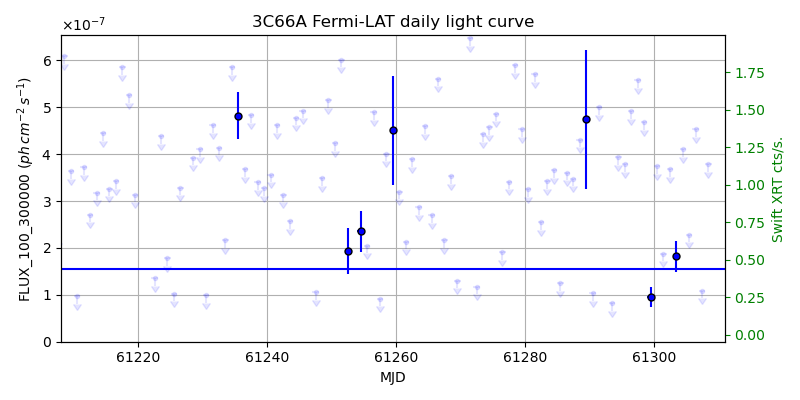
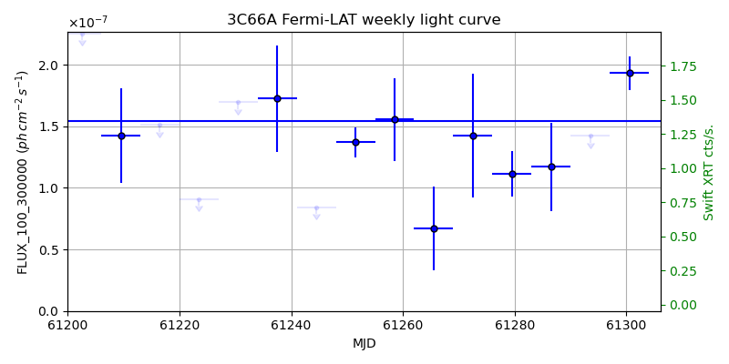
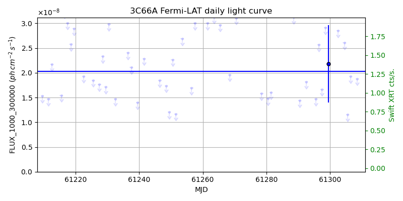
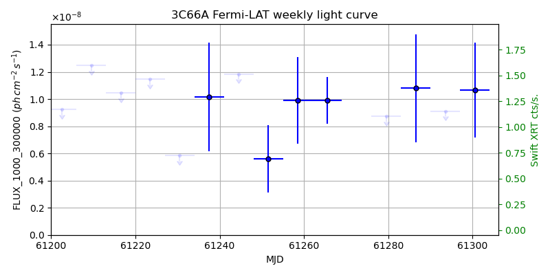

LAT Lightcurve site: https://fermi.gsfc.nasa.gov/ssc/data/access/lat/msl_lc/source/3C_66A
Swift site: https://www.swift.psu.edu/monitoring/source.php?source=3C66A
NED: Query
Time of last update of this page: UT: 2026-09-26 15:12 (MJD: 61309.634)
| Property | Value |
|---|---|
| R.A. | 2:22:39.60 |
| Dec. | 43:02:06.0 |
| z | 0.370 |
| 3FGL SpectrumType | LogParabola |
| 3FGL PL Index | |
| 3FGL Flux_100_300000 | 1.54e-07 1 / (s cm2) |
| 3FGL Flux_1000_300000 | 2.02e-08 1 / (s cm2) |
| 3FGL Flux >200 GeV | 9.90e-11 1 / (s cm2) |
| 3FGL Extrap. Crab >200 GeV | 0.42 |
| 3FGL Flux After EBL Absorption >200GeV | 2.24e-11 1 / (s cm2) |
| 3FGL EBL Crab Fraction >200GeV | 0.10 |

| MJD | dMJD | Flux | dFlux | Frac3FGL | FracCrab>200GeV | EBLFracCrab>200GeV |
|---|---|---|---|---|---|---|
| 61304.50 | 0.50 | 4.10e-07 | 0.00e+00 | 0.00 | 0.00 | 0.00 |
| 61305.50 | 0.50 | 2.28e-07 | 0.00e+00 | 0.00 | 0.00 | 0.00 |
| 61306.50 | 0.50 | 4.53e-07 | 0.00e+00 | 0.00 | 0.00 | 0.00 |
| 61307.50 | 0.50 | 1.09e-07 | 0.00e+00 | 0.00 | 0.00 | 0.00 |
| 61308.50 | 0.50 | 3.79e-07 | 0.00e+00 | 0.00 | 0.00 | 0.00 |

| MJD | dMJD | Flux | dFlux | Frac3FGL | FracCrab>200GeV | EBLFracCrab>200GeV |
|---|---|---|---|---|---|---|
| 61272.50 | 3.50 | 1.42e-07 | 5.02e-08 | 0.92 | 0.39 | 0.09 |
| 61279.50 | 3.50 | 1.12e-07 | 1.85e-08 | 0.72 | 0.30 | 0.07 |
| 61286.50 | 3.50 | 1.17e-07 | 3.59e-08 | 0.76 | 0.32 | 0.07 |
| 61293.50 | 3.50 | 1.42e-07 | 0.00e+00 | 0.00 | 0.00 | 0.00 |
| 61300.50 | 3.50 | 1.93e-07 | 1.36e-08 | 1.25 | 0.53 | 0.12 |

| MJD | dMJD | Flux | dFlux | Frac3FGL | FracCrab>200GeV | EBLFracCrab>200GeV |
|---|---|---|---|---|---|---|
| 61304.50 | 0.50 | 2.61e-08 | 0.00e+00 | 0.00 | 0.00 | 0.00 |
| 61305.50 | 0.50 | 1.15e-08 | 0.00e+00 | 0.00 | 0.00 | 0.00 |
| 61306.50 | 0.50 | 1.93e-08 | 0.00e+00 | 0.00 | 0.00 | 0.00 |
| 61307.50 | 0.50 | 4.29e-08 | 0.00e+00 | 0.00 | 0.00 | 0.00 |
| 61308.50 | 0.50 | 1.88e-08 | 0.00e+00 | 0.00 | 0.00 | 0.00 |

| MJD | dMJD | Flux | dFlux | Frac3FGL | FracCrab>200GeV | EBLFracCrab>200GeV |
|---|---|---|---|---|---|---|
| 61272.50 | 3.50 | 2.11e-08 | 0.00e+00 | 0.00 | 0.00 | 0.00 |
| 61279.50 | 3.50 | 8.71e-09 | 0.00e+00 | 0.00 | 0.00 | 0.00 |
| 61286.50 | 3.50 | 1.08e-08 | 3.96e-09 | 0.53 | 0.22 | 0.05 |
| 61293.50 | 3.50 | 9.11e-09 | 0.00e+00 | 0.00 | 0.00 | 0.00 |
| 61300.50 | 3.50 | 1.07e-08 | 3.49e-09 | 0.53 | 0.22 | 0.05 |
--------------------------------------------------------- Using user-supplied coords: 2:22:39.60 43:02:06.0 2000 --------------------------------------------------------- FLWO UT night of: 2026-09-27 Local Sid. @ Midnight: 00:00 Sunset (-15.0) (local, UT): 19:22 02:22 Sunrise (-15.0) (local, UT): 05:08 12:08 Moonrise (local, UT): Moonset (local, UT): Moon phase: 0.99 --------------------------------------------------------- AzTime LSID UT Obj_el Obj_az Mn_el Mn_az Sep. --------------------------------------------------------- 19:22 19:21 02:22 11.1 45.7 14.0 91.3 44.6 19:52 19:51 02:52 15.7 48.6 20.2 95.1 44.4 20:22 20:21 03:22 20.6 51.2 26.4 99.2 44.2 20:52 20:51 03:52 25.7 53.5 32.6 103.6 43.9 21:22 21:21 04:22 30.9 55.4 38.7 108.5 43.7 21:52 21:51 04:52 36.2 57.0 44.6 114.3 43.5 22:22 22:21 05:22 41.6 58.2 50.2 121.2 43.3 22:52 22:52 05:52 47.1 58.9 55.4 129.6 43.1 23:22 23:22 06:22 52.5 58.9 60.0 140.4 42.9 23:52 23:52 06:52 58.0 58.0 63.5 153.9 42.7 00:22 00:22 07:22 63.4 55.8 65.6 170.3 42.5 00:52 00:52 07:52 68.5 51.2 65.8 188.1 42.3 01:22 01:22 08:22 73.2 42.5 64.1 204.9 42.2 01:52 01:52 08:52 76.9 26.5 60.9 219.1 42.0 02:22 02:22 09:22 78.5 1.6 56.6 230.5 41.8 02:52 02:52 09:52 77.2 336.0 51.5 239.5 41.6 03:22 03:22 10:22 73.7 319.0 46.0 246.7 41.4 03:52 03:52 10:52 69.1 309.6 40.3 252.7 41.2 04:22 04:22 11:22 64.0 304.6 34.3 257.9 41.0 04:52 04:52 11:52 58.7 302.1 28.2 262.5 40.8 05:08 05:09 12:08 55.6 301.4 24.8 264.9 40.7 --------------------------------------------------------- Moon up all night, no dark time. Dark hours >55 deg.: 0.00